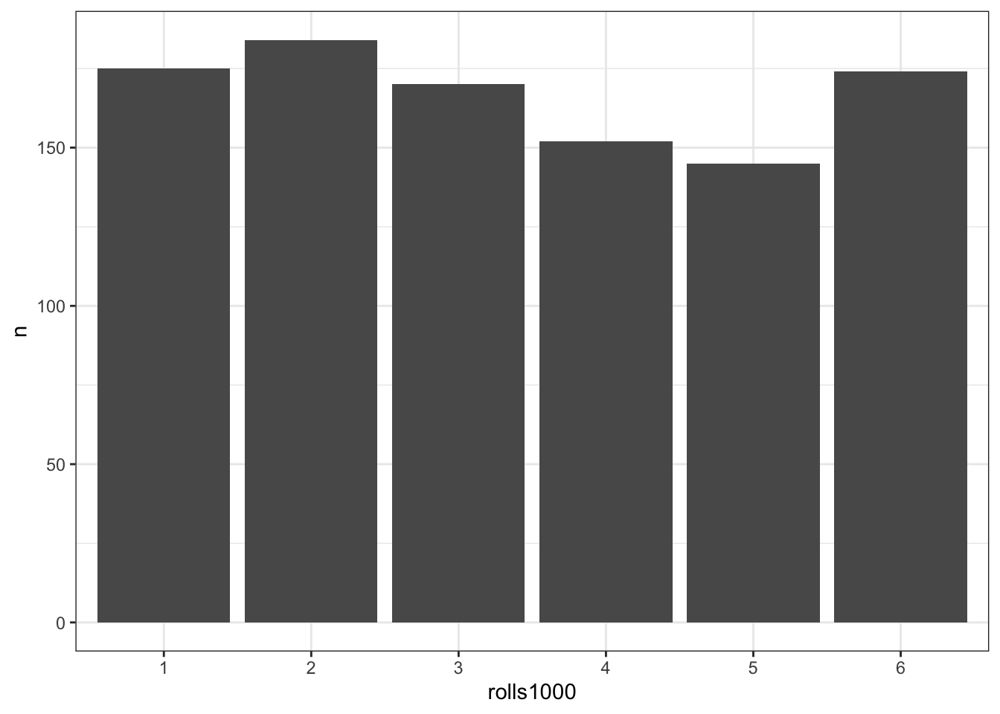
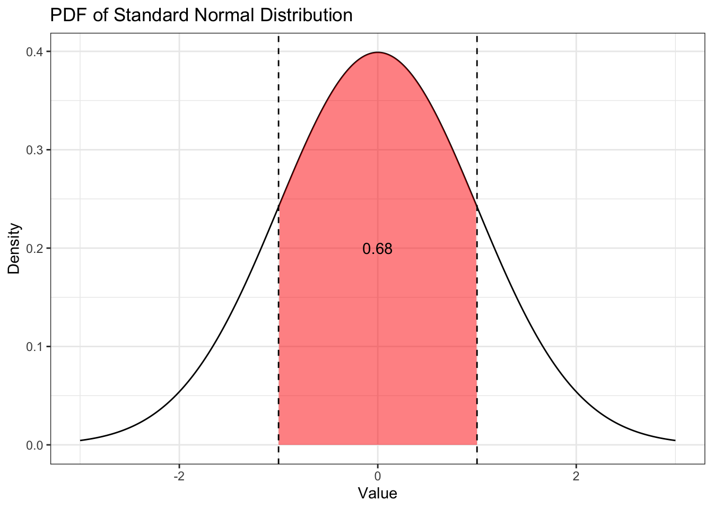

2 Шкалы. Случайные величины. Распределения
2.1 Вспомним, что
- статистика нам помогает делать выводы о генеральной совокупности на основании данных, которые мы собрали на выборке
- мы хотим изучать параметры генеральной совокупности, но они неизвестны и никогда не будут известны — поэтому мы используем выборочные характеристики (оценки), которые мы измерили на нашей выборке
Теперь бы понять, что такое измерение…
2.2 Измерение в социальных науках
Под измерением мы будем понимать приписывание признакам объектов изучаемой совокупности определенных значений на определенной шкале.
Еще раз:
- есть совокупность объектов, которые мы изучаем — выборка
- в ней ней какие-то объекты
- у объектов есть признаки
- если мы припишем признаку какое-то значение на некоторой шкале, значит мы измерим признак.
Такое определение нам позволяет измерить практически всё, что угодно:
- рост
- возраст
- пол (шкала из двух значений
maleиfemale) - национальность
- количество детей в семье
- рейтинг студентов
- курс / уровень обучения
- географические координаты (долгота и широта)
- температура
- дата
- IQ
- нарциссизм / макиавеллизм / психопатия
- время реакции
- точность ответов испытуемого в эксперименте
- и т.д.
Сейчас нас не интересует, как именно «внутри себя» происходит процесс измерения, какие предположения стоят за различными измерениями и как сделать измерение качественным. Отметим только, что, конечно же, нам как исследователям надо следить за тем, насколько адекватные измерения мы имеем, насколько приписанные измерения отражают выраженность, например, психологических черт. Об это вы подробно поговорите в курсе психодиагностики и психометрики.
Итак, у нас есть интересующие нас признаки генеральной совокупности выборки, которые мы измерили, то есть приклеили на них некоторые значения из определенных шкал. Успех!
Теперь надо задуматься про шкалы. Ведь очевидно, что возраст и пол будут измеряться по-разному, также как и нарциссизм и время реакции.
2.3 Признаки и переменные
Мы уже упомянули выше, что мы можем измерять различные признаки. Попытаемся как-то эту кучу систематизировать. В терминах данных признаки — это переменные, поэтому далее мы будем чаще употребляться именно этот термин — переменная — имея в виду то, что мы намерили, изучая признак. Во многом признак и переменная — это синонимы, только первый термин больше из теории измерений, а второй из статистики и анализа данных. Измерение же от отдельного человека / объекта выборки называется наблюдение.
Итак, типы переменных:
- Количественные переменные — те, которые принимают числовые значения
- непрерывные — принимают любые значения (рост, возраст, время реакции и др.)
- дискретные — могут принимать только определенные значения (количество детей в семье, число отчисленных студентов, количество пачек гречи, которое человек скупил на карантине и др.)
Число, приписываемое количественному признаку (переменной) ведёт себя как привычное нам математическое число в том смысле, что выражает некоторое количество — сантиметров, лет, секунд, детей, студентов, пачек гречи…
- Номинальные (категориальные) переменные — используются для разделения наших наблюдений на группы (пол, национальность, курс обучения, используемая операционная ситема компьютера и др.) Записаны эти переменные обычно текстом (скажем, как в примерах выше, пол —
maleиfemaleили операционная система —Win,MacOS,Linux). Однако, например, курс обучения можно записать по-разному: текстом —freshman,sophomore,junior,senior— и числом —1,2,3,4. Однако в данном случае цифры не несут никакого математического смысла — это просто лейблы, с помощью которых мы различаем группы наблюдений. Ведь и пол мы можем записать с помощью чисел — пустьmale = 0, female = 1. Ведь не будем же мы складывать-вычитать девушек и парней?
Внимательный читатель мог заметить, что курс обучения это не совсем категориальная переменная, ведь «второкурсник» в каком-то смысле «больше», чем «первокурсник». Но мы не можем сказать «на сколько» или «во сколько» больше! Что же делать?
- Нельзя сказать, что «второкурсник» выражает большую выраженность признака «год обучения», чем «первокурсник».
- Вместе с тем «второкурсник» дольше учился и освоил больше дисциплин, чем «первокурсник». При этом «третькурсник» учился дольше «второкурсника». То есть есть порядок категорий.
- Такая переменная называется ранговой.
Другой пример рагновой переменной — это студенческий рейтинг. Что делает рейтинг? Упорядочивает студентов. Можно ли сказать, что четвертый в рейтинге студент в два раза менее успешен, чем второй? Нет — тот же GPA может отличаться на десятые или сотые доли.
Итого, переменные:
- количественные
- непрерывные
- дискретные
- ранговые
- номинальные
2.4 Шкалы
2.4.1 Зачем нам знать виды шкал?
От того, в какой шкале измерена переменная, которую мы исследуем, будет зависеть:
- какие графики мы сможем нарисовать
- какие статистики на ней имеют смысл
- какие статистические модели дадут адекватный результат
Ну, крч, почти весь анализ определяется тем, с какой шкалой мы работаем.
2.4.2 Типы шкал
Их всего четыре.
| Шкала | Тип шкалы | Тип данных | Допустимые операции |
|---|---|---|---|
| Номинальная (шкала наименований) | Неметрическая | \(=\), \(\neq\) | |
| Порядковая (ранговая) | Неметрическая | \(=\), \(\neq\), \(>\), \(<\) | |
| Интервальная (шкала разностей) | Метрическая | Количественные | \(=\), \(\neq\), \(>\), \(<\), \(+\), \(-\) |
| Абсолютная (шкала отношений) | Метрическая | Количественные | \(=\), \(\neq\), \(>\), \(<\), \(+\), \(-\), \(\times\), \(\div\) |
| Шкала | Ноль | Допустимые преобразования |
|---|---|---|
| Номинальная (шкала наименований) | Отсутствует | — |
| Порядковая (ранговая) | Отсутствует | Монотонное преобразование |
| Интервальная (шкала разностей) | Относительный | Линейное преобразование |
| Абсолютная (шкала отношений) | Абсолютный | Преобразование подобия |
Пройдёмся по колонкам.
- Тип шкалы — метрическая или неметрическая — определяется тем, одинаковое ли расстояние между делениями шкалы. То есть есть ли на шкале цена деления.
- Так, понятно, что на шкале времени реакции все секунды одинакового размера — метрическая шкала.
- А на шкале «использумая операционная система» вообще нет делений, не то что расстояний.
- Обратите внимание, что на ранговой шкале хотя и есть деления (например, шкала Лайкерта), их размер неодинаковый: нельзя сказать, что 6 на шкале Лайкерта в два раза или на 3 больше, чем 3. Поэтому ранговая шкала — неметрическая.
- Тип данных — количественные или «качественные» — определеяется тем, какие свойства чисел работают на этой шкале.
- Чтобы не утонуть в математической части этого всего, соотнесём это с колонкой допустимые операции.
- На количественных шкалах допустимы операции сложения, вычитания, умножения и деления.
- На «качественных» шкалах допустимы только операции сравнения.
- Чтобы не утонуть в математической части этого всего, соотнесём это с колонкой допустимые операции.
О термине «качественные данные». Почему-то номинальную и ранговую шкалы в литературе часто называют «качественными». Видимо, потому что качественные данные обычно рассматриваются как оппозиция количественным.
Это в некоторой мере справедливо, поскольку есть два типа исследований — качественные и количественные. Они различаются методологией и используемыми методиками и, как следствие, собираемыми данными.
В рамках качественных исследований чаще всего собираются тексты, поэтому во многом качественные данные по факту обычно текстовые. Количественные данные — это, как правило, таблицы с цифрами из любой из четырёх шкал. Безусловно, анализ качественных и количественных данных тажке существенно различается.
Итого, кажется, называть «качественными» номинальную и ранговые шкалы — странно, потому что качественные данные — это неструктурированный текст. Лучше их именовать категориальными. Правда, например, рейтинг студентов (ранговая шкала) тоже не совсем категориальные данные… ай, ладно — будут ранговые!
- Ноль
- На номинальной и порядковой шкалах нуля в математическом смысле нет вовсе. Для номинальной шкалы это очевидно, потому что там вообще нет «чисел» — там только лейблы. Для порядковой шкалы, в определенной мере, тоже, потому что \(0\) на ней будет обозначать только то, что ранг у этого наблюдения ниже, чем ранг у наблюдения с \(1\). Ничего другого этот ноль не обозначает. На интервальной и абсолютной шкалах нуль есть.
- Классический пример интервальной шкалы — это температура в градусах Цельсия. Ноль на этой шкале — температуре замерзания воды — выбран произвольно. Ну, потому что это было достаточно удобно. Больше этот ноль ничем не обоснован. Поскольку ноль относительный, на такой шкале могут быть отрицательные значения — с температурой по Цельсию нас это совершенно не удивляет.
- Классический пример абсолютной шкалы — это температура по Кельвину. Известно, что на этой шкале не бывает отрицательных значений, так как минимум этой шкалы — это минимально возможная температура во Вселенной. Ниже не бывает. Поэтому это абсолютный ноль.
- Допустимые операции
- Наличие относительного нуля даёт возможность складывать и вычитать.
- Наличие абсолютного нуля даёт возможность складывать, вычитать, делить и умножать.
- На номинальной и порядковой шкалах нуля нет — поэтому арифметические действия на них не возможны.
- На номинальной шкале допустимо только сравнение на [не]равенство — мы можем только проверить, одинаковы ли наблюдения [по этой переменной] или не одинаковые.
- На порядковой шкале, помимо сравнения на [не]равенство, допустимо также сравнение на больше-меньше, так как задан порядок.
- Допустимые преобразования
- Отсюда нам нужно попытаться понять, что такое монотонное преобразование. Это любое преобразование, сохраняющее порядок элементов.
- Например, у нас есть шкала Лайкера от 1 до 5 —
[1, 2, 3, 4, 5]. Пусть мы психометрик и собирается вычислять психометрические штуки на таких данных. Для удобства нам надо сделать так, чтобы шкала начиналась с нуля. Кажется, надо просто вычесть единицу из всех наблюдений — но законно ли это? На сломаются ли закономерности наших данных? Да, законно, потому что вычетание единицы — это монотонное преобразование, и порядок элементов сохраниться —[0, 1, 2, 3, 4].
- Например, у нас есть шкала Лайкера от 1 до 5 —
- Отсюда нам нужно попытаться понять, что такое монотонное преобразование. Это любое преобразование, сохраняющее порядок элементов.
2.4.3 Порядок шкал по мощности
Если взять на основу допустимые операции, можно упорядочить шкалы по мощности — более мощной является та шкала, на которой допустимо больше операций.
\[ \text{номинальная} < \text{порядковая} < \text{интервальная} < \text{абсолютная} \]
Наименее мощая — номинальная, наиболее мощная — абсолютная. Что нам надо вынести из это иерархии? То, что мы можем по ней двигаться только влево.
Например,
| Объем выборки [абсолютная] | Объем выборки [ранговая] | Объем выборки [номинальная] |
|---|---|---|
| 20684 | жесть какая большая | большая |
| 1635 | очень большая | большая |
| 1200 | большая | большая |
| 610 | норм | большая |
| 311 | норм | большая |
| 35 | маленькая | маленькая |
| 15 | жесть какая маленькая | маленькая |
В психологии чаще всего мы сталкиваемся с порядковыми шкалами. Это просто факт. Надо его принять.
2.5 Случайные величины
Ещё раз:
Измерение — это приписывание признакам объектов изучаемой совокупности определенных значений на определенной шкале.
Со шкалой разобрались. Теперь надо разобраться с приписыванием [с точки зрения статистики — теорию измерений не трогаем].
2.5.1 Случайный эксперимент. Исходы случайного эксперимента
Отвлечемся на любимый объект статистиков — игральный кубик.

- Бросание игрального кубика — это случайный эксперимент.
- Выпавшее число — это случайная величина.
Теперь более строго.
Случайный эксперимент — это математическая модель некоторого реального эксперимента. Это не совсем один-в-один соотносится с экспериментом как методом исследования, который вы изучаете на эксперименталке. Важно, что результат случайного эксперимента невозможно точно предсказать — то есть какой стороной упадёт кубик заранее неизвестно.
Случайная величина — это некоторая переменная, значения которой представляют собой численные исходы некоторого случайного эксперимента. Исход бросания кубика — выпавшее число.
Из психологического поля:
- ответ респондента на айтем опросника — это случайный эксперимент, выбранный им балл на шкале Лайкерта — это случайная величина — неизвестно, какой балл выберет респондент
- клик на стимул на экране в эксперименте зрительного поиска — это случайный эксперимент, время реакции, которое фиксирует PsychoPy — случайная величина — неизвестно, когда точно испытуемый кликнет по стимулу
- запись ЭЭГ-активности в конкретный момент времени — случайный эксперимент, амплитуда колебаний ЭЭГ — случайная величина — неизвестно, что мы зафиксируем в конкретный момент (потому что шум, там еще что-то на экране экспериментального монитора происходит)
- ну, и т.д.
Итого, мы постоянно имеем дело со случайными экспериментами, но что более важно, что по результам этих случайных экспериментов [в рамках нашего эксперимента или заполнения опросника] мы собираем значения случайных величин.
Вся статистика работает со случайными величинами.
2.5.2 Случайная величина
Попробуем ещё такой заход. Вот мы тут говорим об измерениях признаков/переменных. Эти переменные и есть случайные величины, которые мы измеряем. Случайные — потому что мы никогда не знаем, что же мы получим в конкретном измерении. Почему не знаем? Если у нас «хардовое» измерение (типа ЭЭГ или PsychoPy) — всегда есть погрешность измерения и «шум» в данных. Мы не можем предусмотреть всё, чтобы нашего испытуемого ничего не отвлекало, он занимался только экспериментальной задачей, не думал о коте, который остался дома или испытывал блаженство от ЭЭГшной шапочки на себе. Если это опросник — всё, вроде бы, ещё понятнее. Что нам именно сейчас отметит именно этот респондент — известно только одному никому. В каком состоянии он пришёл, какие у него личностные черты и свойства, насколько от нам доверяет, насколько он готов отвечать честно и т.д.
К вопросу, зачем нам статистика и анализ данных — чтобы среди всех этих факторов выделить то, что нас интересует как исследователей, и получить ответы на исследовательские вопросы.
Случайные величины бывают дискретные и непрерывные.
- непрерывные — принимают любые значения (рост, возраст, время реакции и др.)
- дискретные — могут принимать только определенные значения
Прямо как количественные переменные. Но они ещё себя несколько по-разному ведут.
2.5.3 Дискретные случайные величины
С дискретными случайными величинами все достаточно просто:
- есть ограниченный набор значений, которые случайная величина может принимать
- есть вероятности, с которыми случайная величина принимает эти значения
Давайте на игральном кубике.
Есть кубик, и него 6 граней. Возможные значения случайной величины \(X\) — \(\{1, 2, 3, 4, 5, 6\}\). Вероятность того, что кубик упадет хотя бы какой-то из шести сторон — \(1\). Если кубик «честный», то каждая из граней выпадает равновероятно, то есть вероятность, с которой наша случайная величина принимает каждое из своих значений
\[ \mathrm{p}(X\!=\!1) = \mathrm{p}(X\!=\!2) = \mathrm{p}(X\!=\!3) = \mathrm{p}(X\!=\!4) = \mathrm{p}(X\!=\!5) = \mathrm{p}(X\!=\!6) = \frac{1}{6} \]
Давайте подбросим кубик 100 раз. Вернее, сделаем симуляцию:
rolls <- dice(100)
rolls## [1] 1 2 4 6 6 3 4 2 4 1 1 4 4 2 6 5 4 6 2 6 2 5 6 2 6 1 4 1 2 2 6 4 1 1 3 3 4
## [38] 2 2 1 3 1 5 5 5 6 6 5 1 1 4 5 5 6 3 2 3 2 3 1 6 1 3 6 6 1 5 3 6 4 4 2 1 5
## [75] 3 5 5 4 6 3 6 3 3 5 6 5 2 4 6 5 6 6 6 2 6 4 4 1 6 6Мы получили исходы 100 случайных экспериментов. Можем ли мы посчитать, сколько раз каждая из граней выпала? Да.
table(rolls)## rolls
## 1 2 3 4 5 6
## 16 15 13 16 15 25Внимание, мы построили таблицу частот, она же частотная таблица. Это способ описания поведения дискретной случайной величины в эксперименте.
Мы также можем рассчитать доли:
table(rolls) / 100## rolls
## 1 2 3 4 5 6
## 0.16 0.15 0.13 0.16 0.15 0.25Можем ли мы это каким-то образом визуализировать? Да.
table(rolls) %>%
as_tibble() %>%
ggplot(aes(rolls, n)) +
geom_col()Внианиме, столбчатая диаграмма (barplot). Как видите, по оси x идут значения нашей случайной величины, по оси y частота, с которой случайная величина принимает данной значение. Изи.
Но погодите, кубик должен падать одинаково часто на каждую из граней, а на графике частоты разные. Да, это правда. Как мы уже не раз упоминали, в данных всегда есть шум и ни один эксперимент не может пройти идеально. В том числе и симуляция. Поэтому те отклонения, которые мы видим на графике, это всего лишь шум — то, что нам нерелевантно.
Чтобы убедиться, что кубик все-таки верный, давайте подкинем его 1000 раз.
rolls1000 <- dice(1000)
rolls1000## [1] 3 6 6 4 5 4 2 2 1 2 4 3 6 2 5 1 3 2 1 6 5 4 2 5 1 6 1 4 4 4 2 1 3 6 6 6 5
## [38] 5 2 4 5 1 1 2 1 5 2 2 4 4 5 5 6 5 2 3 3 3 4 3 3 3 4 2 6 6 5 2 2 2 2 3 3 1
## [75] 3 2 2 1 5 3 6 4 6 5 1 2 1 3 3 5 4 6 6 4 5 2 3 5 3 5 5 2 5 6 5 3 2 1 6 2 6
## [112] 3 2 3 5 5 3 1 3 2 4 1 2 6 3 5 3 5 2 3 3 1 5 6 3 4 2 3 1 3 2 1 2 4 5 3 2 1
## [149] 2 6 3 1 4 5 3 3 4 2 6 3 5 5 5 1 1 2 5 4 3 6 5 3 5 3 3 5 6 5 2 1 2 4 1 1 6
## [186] 5 3 2 2 4 3 1 4 4 6 4 3 4 1 3 2 1 1 2 3 3 1 3 1 6 5 1 1 4 1 4 4 2 4 1 2 2
## [223] 3 1 3 3 2 3 1 6 6 1 6 5 4 4 6 1 2 1 5 3 3 4 3 5 6 2 6 1 1 1 1 2 6 6 5 6 1
## [260] 3 6 6 6 1 1 6 6 6 3 6 2 6 6 6 4 6 6 4 4 2 1 1 5 1 6 1 4 3 5 6 3 1 6 3 2 2
## [297] 6 1 1 6 5 6 4 6 2 6 4 6 5 2 6 3 4 2 1 4 2 2 2 1 6 5 2 3 3 5 4 2 3 1 6 5 6
## [334] 2 1 4 3 4 2 3 5 6 6 1 2 6 6 4 3 1 6 3 1 4 4 3 4 6 6 1 2 6 3 2 6 4 1 2 1 6
## [371] 2 6 6 4 5 3 4 4 3 2 1 3 6 2 5 2 6 5 6 5 1 3 1 1 3 4 5 2 3 3 4 3 2 3 6 3 3
## [408] 1 3 2 2 1 4 2 4 4 5 6 4 3 2 6 1 4 2 6 3 2 5 2 6 2 1 1 5 5 3 6 4 2 3 1 5 5
## [445] 1 5 4 5 5 5 5 6 2 4 1 3 1 6 3 4 6 5 6 2 2 2 3 2 1 5 2 2 4 5 5 6 4 5 2 6 2
## [482] 5 3 2 1 2 5 4 6 5 4 1 3 4 3 6 5 2 6 4 3 1 1 5 2 6 4 2 3 1 5 5 2 3 4 2 1 5
## [519] 3 1 1 1 1 2 3 2 4 2 6 4 6 1 6 3 2 6 2 2 5 2 4 6 6 6 1 6 3 6 4 1 1 5 3 1 3
## [556] 3 4 1 3 5 3 5 6 1 3 1 5 4 3 3 6 6 1 2 1 2 2 2 3 5 6 2 3 6 6 4 3 1 6 2 2 5
## [593] 3 3 6 6 2 2 1 5 3 6 4 2 2 1 6 3 3 2 4 2 3 5 2 5 1 2 5 6 3 6 6 5 6 5 3 3 5
## [630] 5 6 6 1 1 2 4 6 3 1 3 3 1 5 4 6 2 1 2 1 4 4 4 1 1 2 5 4 4 1 5 2 2 1 1 3 3
## [667] 1 3 2 3 4 4 6 2 6 2 3 2 1 4 2 5 6 5 3 4 1 4 3 3 5 6 4 2 1 5 4 1 6 4 5 5 4
## [704] 3 3 1 3 1 5 6 6 6 4 1 2 4 6 1 6 1 1 4 5 2 4 4 4 3 4 5 2 1 4 5 6 2 2 1 1 1
## [741] 1 5 2 6 4 4 4 3 2 5 3 2 5 6 4 2 4 1 4 4 2 1 6 5 4 4 1 4 2 2 3 5 1 2 4 6 4
## [778] 4 6 2 6 1 1 4 6 4 6 5 1 5 6 3 4 5 3 5 6 5 4 6 2 2 5 3 2 2 1 6 6 3 3 6 1 2
## [815] 4 4 2 1 5 1 1 3 4 2 2 5 4 3 2 6 4 5 6 3 3 6 2 6 3 4 6 1 1 6 3 2 1 1 2 4 6
## [852] 3 6 3 2 1 4 1 4 3 5 1 3 5 3 5 2 2 4 6 2 1 1 5 6 3 3 1 4 5 4 3 1 3 1 2 5 1
## [889] 2 5 1 6 5 4 6 1 4 1 3 2 5 1 3 4 3 3 4 1 5 1 4 6 6 3 2 6 2 6 4 2 6 1 4 1 2
## [926] 1 5 4 4 2 5 5 4 1 3 5 5 5 5 3 6 6 5 2 1 6 4 1 6 5 4 3 2 4 3 2 2 6 5 2 6 4
## [963] 3 2 2 2 2 2 5 6 4 2 2 6 1 6 5 6 6 4 2 1 6 1 1 5 2 1 1 1 3 5 3 3 1 3 3 4 4
## [1000] 2table(rolls1000)## rolls1000
## 1 2 3 4 5 6
## 175 184 170 152 145 174table(rolls1000) / 1000## rolls1000
## 1 2 3 4 5 6
## 0.175 0.184 0.170 0.152 0.145 0.174table(rolls1000) %>%
as_tibble() %>%
ggplot(aes(rolls1000, n)) +
geom_col()
Ну, почти. Нивелировать шум полностью нам не удасться никогда, поэтому будем считать, что мы достаточно убеждены, что кубик честен.
То, что мы сейчас с вами строили — в таблице или на графике — называется распределением случайной величины. Распределение — это некоторый закон, который полностью описывает поведение случайной величины.
Итак, мы сейчас обсудили как строить эмпирическое распределение нашей дискретной переменной. А как нам построить теоретическое распределение нашей случайной величины? Для этого нам нужно взять две оси — x и y. По оси абсцисс расположить значения нашей случайной величины, по оси ординат — вероятности, с которыми наша случайная величина принимает данные значения. Выглядит это так:
То, что изображено на рисунке, называется функцией вероятности (probability mass function, PMF) дискретного равномерного распределения.
2.5.4 Непрерывные случайные величины
Окей, с дискретными разобрались. С непрерывными же всё то же самое?
Не совсем. Есть один ключевой момент, который всё портит.
Мы говорили, что дискретные слуайные величины могут принимать только некоторые значения, например, целочисленные — \(1\), \(2\), \(3\), \(-5\), \(0\)… Их можно посчитать, и сопоставить им вероятности, с которыми случайная величина принимает эти значения.
Чуть выше мы разобрались с дискретным равномерным распределением. Давайте попробуем применить аналогичные размышления для непрерывного равномерного распределения. Пусть мы случайным образом выбираем 1000 чисел из отрезка \([0, 1]\)1. Займемся симуляцией и построим частотную таблицу:
random1000 <- runif(1000)
random1000## [1] 0.528525293 0.042956572 0.961869701 0.287214211 0.655070315 0.906425190
## [7] 0.385090959 0.739701343 0.108050812 0.876321255 0.732424012 0.105350310
## [13] 0.086583579 0.593997466 0.107902832 0.337653882 0.845239543 0.835298421
## [19] 0.377824190 0.219024229 0.985844725 0.793122067 0.926898566 0.447001730
## [25] 0.006397879 0.613737625 0.429120410 0.002411739 0.529914760 0.979911701
## [31] 0.213431214 0.505213741 0.664748084 0.339051310 0.384491665 0.273625620
## [37] 0.665097688 0.554465198 0.995287141 0.492505387 0.354816613 0.100368032
## [43] 0.035678978 0.680580350 0.917942245 0.600777535 0.457417274 0.456833409
## [49] 0.184127068 0.850846998 0.847365417 0.404210808 0.039762396 0.351832645
## [55] 0.581651938 0.798522919 0.565829700 0.843915927 0.638862351 0.742467148
## [61] 0.300011144 0.979148403 0.842870473 0.111267260 0.968845544 0.452386542
## [67] 0.527433140 0.995150766 0.193339976 0.132539191 0.855533305 0.613441925
## [73] 0.759586709 0.944391983 0.742472603 0.508892905 0.523467981 0.554339550
## [79] 0.427984002 0.264061315 0.356022611 0.166529896 0.793397302 0.012918925
## [85] 0.024425125 0.356565910 0.651082525 0.342764672 0.053076100 0.102684933
## [91] 0.779292675 0.690081893 0.265710650 0.168641553 0.308139855 0.895879287
## [97] 0.738159748 0.285394213 0.766626233 0.999542668 0.112239282 0.471388711
## [103] 0.177008250 0.610973730 0.382378143 0.044846290 0.973277733 0.074877039
## [109] 0.136582463 0.718909910 0.090398542 0.164902440 0.389795417 0.618180395
## [115] 0.899257882 0.888212674 0.804484569 0.991948168 0.514506962 0.069011983
## [121] 0.105287368 0.257935527 0.263307486 0.151656999 0.013069017 0.385178072
## [127] 0.261521821 0.823402909 0.977934271 0.802052357 0.473607919 0.288974677
## [133] 0.060537746 0.431304435 0.249638302 0.405480144 0.804031072 0.378493302
## [139] 0.644357530 0.654862438 0.524416405 0.323582105 0.577099730 0.593640742
## [145] 0.098757927 0.634130985 0.290317521 0.126860264 0.098832191 0.933222520
## [151] 0.308224885 0.778160578 0.140879949 0.408233505 0.784381104 0.365221179
## [157] 0.317818294 0.589255437 0.438559600 0.998110313 0.142722033 0.178558530
## [163] 0.798530889 0.962312804 0.966543056 0.761955222 0.446916637 0.716569470
## [169] 0.713707505 0.963024371 0.878434728 0.348177761 0.457092322 0.479103195
## [175] 0.063216637 0.555404907 0.717774661 0.783773511 0.398976938 0.665983666
## [181] 0.706181437 0.860029093 0.863852162 0.647622529 0.518153827 0.743859365
## [187] 0.180004730 0.659454197 0.732012521 0.473281976 0.565612602 0.304501054
## [193] 0.547128472 0.691074453 0.453015244 0.877782562 0.395683161 0.703038955
## [199] 0.601647291 0.137524841 0.346838781 0.354431327 0.551828158 0.698212025
## [205] 0.432789796 0.651422709 0.485861198 0.094306995 0.438971471 0.425592132
## [211] 0.181828946 0.626152340 0.245720635 0.478893196 0.254556597 0.310842400
## [217] 0.780662168 0.379376432 0.027829262 0.710199165 0.083020112 0.445789215
## [223] 0.415022487 0.133714394 0.490968505 0.532210688 0.486651475 0.536841435
## [229] 0.027871597 0.006789383 0.546587655 0.439931100 0.503785726 0.816061616
## [235] 0.490251042 0.193040482 0.552333323 0.425817162 0.150555689 0.602783814
## [241] 0.348318357 0.152979035 0.176302917 0.956468354 0.063138819 0.421583742
## [247] 0.950285510 0.402588507 0.090729849 0.069413304 0.623239221 0.089157666
## [253] 0.390768200 0.504254045 0.136044066 0.313381453 0.187455696 0.302164603
## [259] 0.096539342 0.372355461 0.011062843 0.123714535 0.814328182 0.218727140
## [265] 0.163769908 0.671328607 0.945469350 0.723955143 0.357863047 0.381515240
## [271] 0.404071331 0.334877860 0.584959561 0.281845494 0.369084996 0.925480631
## [277] 0.664977894 0.020248176 0.128888716 0.251051320 0.564552526 0.040428324
## [283] 0.373227112 0.177456790 0.247696704 0.169837814 0.663424500 0.270750454
## [289] 0.035839426 0.820630002 0.310651516 0.167109533 0.020386254 0.601795299
## [295] 0.639090464 0.259430292 0.319792185 0.484433930 0.321553158 0.152698816
## [301] 0.475966757 0.724404645 0.141045654 0.765936308 0.308358618 0.494237825
## [307] 0.492750237 0.732036666 0.135635635 0.102648091 0.191414882 0.306819927
## [313] 0.106538956 0.307724086 0.872432767 0.305429230 0.296842169 0.009447885
## [319] 0.422059170 0.854693341 0.870955098 0.308060785 0.950031322 0.153555699
## [325] 0.339836022 0.096650081 0.144298083 0.644914222 0.289565495 0.935735694
## [331] 0.360876854 0.052731173 0.213143549 0.059665213 0.302457726 0.470128482
## [337] 0.346962250 0.278114515 0.088230971 0.497471220 0.255842955 0.689677891
## [343] 0.428084992 0.631892812 0.660772944 0.248900028 0.566369814 0.273398643
## [349] 0.061367811 0.748494548 0.159408010 0.362671282 0.293056028 0.984993169
## [355] 0.630051515 0.878695974 0.410346448 0.280319715 0.471057295 0.408308298
## [361] 0.036102553 0.051769297 0.085790234 0.690872464 0.245296283 0.013499285
## [367] 0.739527289 0.307942917 0.808419453 0.544748377 0.435546680 0.275091529
## [373] 0.365641729 0.833866138 0.614142405 0.043705107 0.197913570 0.910475295
## [379] 0.439086577 0.812957128 0.091131133 0.595547255 0.880024271 0.230275680
## [385] 0.985541203 0.639832655 0.089979753 0.623633199 0.168034626 0.888590685
## [391] 0.210232275 0.792300794 0.604068991 0.284179956 0.380326468 0.457650113
## [397] 0.316032655 0.159497080 0.073488196 0.588326697 0.320084102 0.659891577
## [403] 0.573150816 0.345288522 0.132935907 0.732324785 0.676200539 0.785333992
## [409] 0.386172077 0.276039884 0.997851744 0.613860360 0.420394568 0.719607592
## [415] 0.531551865 0.436323495 0.445372847 0.382797619 0.533882821 0.127942469
## [421] 0.463759488 0.793539326 0.906011811 0.804072884 0.296333696 0.651915020
## [427] 0.970849454 0.957667704 0.525333275 0.358676742 0.974643135 0.680031321
## [433] 0.694990502 0.933413629 0.054990021 0.560524815 0.986275079 0.515838805
## [439] 0.141370307 0.186885437 0.453018303 0.517925932 0.803656292 0.509586515
## [445] 0.647698797 0.710354028 0.659784801 0.159408940 0.708528477 0.496179519
## [451] 0.332000685 0.538759700 0.366960775 0.403101744 0.147651309 0.639918241
## [457] 0.627930825 0.691780099 0.672806868 0.119213856 0.768222784 0.574545130
## [463] 0.833413247 0.996186308 0.507872290 0.587656136 0.951279064 0.086540022
## [469] 0.808875527 0.752231868 0.533908871 0.560721230 0.220780304 0.181829528
## [475] 0.681231045 0.027694108 0.055402956 0.861627617 0.637515285 0.265527880
## [481] 0.997652116 0.580635261 0.061475329 0.185179049 0.882519784 0.035110404
## [487] 0.414688662 0.573975210 0.469753411 0.591437602 0.102497714 0.819664526
## [493] 0.675258480 0.403911200 0.903693445 0.209411773 0.636349119 0.122579854
## [499] 0.064226347 0.457062681 0.711191098 0.098308350 0.661555369 0.251858890
## [505] 0.482276493 0.220098444 0.896695699 0.348293486 0.196551945 0.574207470
## [511] 0.128681236 0.817459648 0.102642891 0.310812415 0.876862743 0.283881983
## [517] 0.138760305 0.494687335 0.264499200 0.455600870 0.964995539 0.409010173
## [523] 0.877632580 0.354381429 0.211922570 0.379674656 0.331864756 0.622353664
## [529] 0.805646739 0.117634952 0.339612114 0.509680738 0.896305157 0.541358937
## [535] 0.555628881 0.982843214 0.474069282 0.856458467 0.281812029 0.103870733
## [541] 0.023795218 0.074233853 0.673223700 0.894377815 0.403828955 0.751851646
## [547] 0.344824348 0.849117126 0.781557068 0.308029541 0.979245168 0.622665131
## [553] 0.140424041 0.243231929 0.918700545 0.641846995 0.419462363 0.525738798
## [559] 0.964004369 0.518813665 0.975068838 0.124143796 0.045040319 0.135030656
## [565] 0.130363166 0.186819942 0.699635611 0.971423859 0.755103191 0.371725416
## [571] 0.982181823 0.792425419 0.207668858 0.252676425 0.931114216 0.768384498
## [577] 0.173981418 0.158282849 0.306366958 0.895757834 0.313158004 0.173255723
## [583] 0.692496563 0.761348727 0.374784267 0.805799968 0.535320568 0.397735088
## [589] 0.357124909 0.679952329 0.235492426 0.927664396 0.760023081 0.435441357
## [595] 0.253646866 0.876224103 0.283633490 0.151117051 0.249482865 0.554592821
## [601] 0.219150387 0.576632280 0.780962080 0.981123974 0.313794021 0.778973058
## [607] 0.717467599 0.622553651 0.275281684 0.948037592 0.574446763 0.873223674
## [613] 0.680171487 0.291858975 0.868648598 0.277670968 0.058114729 0.925262127
## [619] 0.101457038 0.286836910 0.380635982 0.863717690 0.634545960 0.962192723
## [625] 0.071277531 0.113759069 0.468153423 0.741989999 0.080956489 0.382182991
## [631] 0.430781106 0.272916676 0.283475001 0.930724412 0.087792930 0.650271253
## [637] 0.294130538 0.547740419 0.943853941 0.077151109 0.638007784 0.265070072
## [643] 0.440964279 0.610441467 0.664228640 0.679934238 0.971958244 0.999134674
## [649] 0.686109988 0.993194472 0.754066717 0.907896088 0.249598066 0.492264435
## [655] 0.579065427 0.567235386 0.194519846 0.519222046 0.922499792 0.810306901
## [661] 0.456482089 0.495442895 0.761615689 0.851899501 0.042675961 0.222019378
## [667] 0.950957968 0.692342097 0.163410270 0.016261624 0.427589162 0.151275615
## [673] 0.215259365 0.681062428 0.154774817 0.235349833 0.487345378 0.331328061
## [679] 0.846271110 0.902411184 0.841681567 0.198699001 0.599995124 0.207827812
## [685] 0.234190740 0.189498336 0.004963637 0.477753868 0.306706625 0.243905882
## [691] 0.438535285 0.155873806 0.202734362 0.850365532 0.718336608 0.481648718
## [697] 0.582157147 0.487865743 0.916961575 0.782227520 0.897144960 0.099541343
## [703] 0.450080940 0.429136953 0.668453133 0.563424170 0.039694220 0.350259793
## [709] 0.497265849 0.790357893 0.273327948 0.456952268 0.574596169 0.420870604
## [715] 0.419395066 0.365638998 0.114926169 0.164290376 0.967638321 0.987740977
## [721] 0.222057035 0.479376669 0.200347607 0.667811017 0.776563367 0.923628106
## [727] 0.162490169 0.802497451 0.564920639 0.735351747 0.908380311 0.727056570
## [733] 0.817118577 0.518909394 0.099379731 0.741508580 0.959528290 0.302803718
## [739] 0.469794617 0.819540968 0.773912806 0.716726998 0.731015280 0.448009936
## [745] 0.284406206 0.235476519 0.650598165 0.434452482 0.977282281 0.763656839
## [751] 0.534564226 0.568211750 0.564037642 0.975556935 0.256872043 0.362546901
## [757] 0.383296484 0.523650561 0.117833467 0.952337300 0.058110305 0.305662819
## [763] 0.694589347 0.795035635 0.995785008 0.370445767 0.259960172 0.979173917
## [769] 0.757550006 0.480454710 0.024092301 0.415471805 0.424675419 0.151209313
## [775] 0.454556155 0.355992400 0.092935704 0.428101255 0.917724188 0.409139640
## [781] 0.453749314 0.746370072 0.336816528 0.809404857 0.123532047 0.791252152
## [787] 0.620911673 0.478062006 0.370715248 0.894416765 0.248830078 0.345365681
## [793] 0.023394342 0.973506391 0.609553941 0.469555940 0.807746295 0.783545998
## [799] 0.557256188 0.596796188 0.616831604 0.206989667 0.750833228 0.695518740
## [805] 0.028800163 0.584761387 0.866666509 0.892129819 0.988885789 0.008200923
## [811] 0.367394739 0.449044922 0.010287790 0.600344738 0.914671647 0.638527422
## [817] 0.093614270 0.295234131 0.309917716 0.316690253 0.657733543 0.002424575
## [823] 0.984921113 0.294651755 0.276269543 0.052109837 0.295889853 0.746909516
## [829] 0.032178760 0.366377750 0.077063193 0.774074544 0.155808914 0.714598828
## [835] 0.536419754 0.266014881 0.768001997 0.848294498 0.668512607 0.549439596
## [841] 0.436875200 0.255510316 0.312152037 0.855308463 0.212265106 0.855942141
## [847] 0.622379178 0.654422583 0.228920054 0.911261441 0.841959933 0.928844389
## [853] 0.092242201 0.618164857 0.304642450 0.941023123 0.205464626 0.303666544
## [859] 0.263164603 0.893889225 0.438272669 0.050579945 0.573987381 0.734461057
## [865] 0.389560550 0.511323797 0.167940369 0.463885471 0.587060080 0.234582277
## [871] 0.126700570 0.314324783 0.226176802 0.129136108 0.003144464 0.840466299
## [877] 0.559111003 0.842029891 0.381054586 0.563651689 0.208664185 0.130929577
## [883] 0.363079337 0.246842983 0.295568985 0.206259568 0.048881982 0.540298942
## [889] 0.759111787 0.508643365 0.589996963 0.427828662 0.421241518 0.607597266
## [895] 0.045299002 0.252088425 0.468233266 0.402741861 0.305669516 0.629765927
## [901] 0.363863516 0.785651763 0.182407380 0.532234522 0.018739172 0.634932250
## [907] 0.223390938 0.735278088 0.268092149 0.570272326 0.834295451 0.094677348
## [913] 0.807289387 0.743793142 0.540039500 0.792632532 0.537648156 0.208486730
## [919] 0.994761769 0.058665062 0.767229160 0.823536459 0.120654020 0.212183973
## [925] 0.315411319 0.449373989 0.241037985 0.005952123 0.816007492 0.755401337
## [931] 0.693238971 0.355267381 0.698843068 0.280122678 0.901196954 0.075541044
## [937] 0.385962952 0.511527065 0.369110323 0.199994396 0.523953018 0.251545086
## [943] 0.575146879 0.987892565 0.141984300 0.099160989 0.759168828 0.366511978
## [949] 0.353333960 0.598646209 0.777279056 0.943858157 0.257353828 0.437843468
## [955] 0.069200166 0.434800749 0.859578741 0.439072410 0.352932516 0.471067750
## [961] 0.210195228 0.209376683 0.266772648 0.775432809 0.706178610 0.215672947
## [967] 0.129186543 0.738615309 0.257298094 0.742661295 0.292022145 0.016083962
## [973] 0.433824144 0.412015742 0.013836884 0.719485947 0.799171663 0.029993199
## [979] 0.798287737 0.671109255 0.250824574 0.805536259 0.870260116 0.612479856
## [985] 0.513414307 0.821384760 0.118213083 0.423674629 0.977894242 0.453313655
## [991] 0.985236244 0.195975268 0.049626604 0.831345623 0.098613169 0.013838237
## [997] 0.252940252 0.561001692 0.345513676 0.830616354table(random1000)## random1000
## 0.00241173943504691 0.00242457515560091 0.00314446375705302 0.00496363709680736
## 1 1 1 1
## 0.00595212285406888 0.00639787875115871 0.0067893834784627 0.00820092251524329
## 1 1 1 1
## 0.00944788451306522 0.0102877903264016 0.0110628430265933 0.012918925145641
## 1 1 1 1
## 0.0130690166261047 0.0134992846287787 0.0138368839398026 0.0138382371515036
## 1 1 1 1
## 0.0160839620511979 0.0162616239394993 0.0187391724903136 0.020248175598681
## 1 1 1 1
## 0.0203862537164241 0.0233943418134004 0.0237952175084502 0.0240923014935106
## 1 1 1 1
## 0.0244251245167106 0.0276941079646349 0.027829262195155 0.0278715973254293
## 1 1 1 1
## 0.0288001634180546 0.0299931990448385 0.0321787595748901 0.03511040401645
## 1 1 1 1
## 0.035678977612406 0.0358394263312221 0.0361025528982282 0.039694219827652
## 1 1 1 1
## 0.0397623956669122 0.0404283243697137 0.042675961041823 0.042956571560353
## 1 1 1 1
## 0.0437051067128778 0.0448462904896587 0.0450403192080557 0.0452990022022277
## 1 1 1 1
## 0.0488819815218449 0.0496266037225723 0.0505799446254969 0.0517692973371595
## 1 1 1 1
## 0.0521098366007209 0.0527311731129885 0.0530761003028601 0.0549900205805898
## 1 1 1 1
## 0.0554029562044889 0.0581103048752993 0.0581147288903594 0.0586650620680302
## 1 1 1 1
## 0.0596652128733695 0.0605377464089543 0.0613678109366447 0.0614753291010857
## 1 1 1 1
## 0.0631388190668076 0.0632166371215135 0.0642263474874198 0.069011983461678
## 1 1 1 1
## 0.0692001655697823 0.0694133043289185 0.0712775306310505 0.0734881963580847
## 1 1 1 1
## 0.0742338530253619 0.0748770385980606 0.0755410443525761 0.0770631928462535
## 1 1 1 1
## 0.0771511087659746 0.0809564893133938 0.083020111778751 0.085790233919397
## 1 1 1 1
## 0.0865400217007846 0.0865835787262768 0.0877929299604148 0.0882309705484658
## 1 1 1 1
## 0.0891576656140387 0.0899797526653856 0.0903985423501581 0.0907298487145454
## 1 1 1 1
## 0.0911311327945441 0.0922422013245523 0.0929357036948204 0.0936142695136368
## 1 1 1 1
## 0.0943069953937083 0.0946773481555283 0.0965393423102796 0.0966500812210143
## 1 1 1 1
## 0.0983083501923829 0.0986131685785949 0.0987579270731658 0.0988321907352656
## 1 1 1 1
## 0.0991609890479594 0.0993797313421965 0.0995413428172469 0.100368031533435
## 1 1 1 1
## 0.101457037962973 0.102497713640332 0.10264289053157 0.102648091269657
## 1 1 1 1
## 0.102684932760894 0.103870732942596 0.105287368176505 0.105350309517235
## 1 1 1 1
## 0.106538956286386 0.107902831863612 0.108050811570138 0.111267260275781
## 1 1 1 1
## 0.112239281646907 0.113759069470689 0.114926169393584 0.117634951835498
## 1 1 1 1
## 0.117833467200398 0.118213083362207 0.119213855592534 0.12065402045846
## 1 1 1 1
## 0.122579854447395 0.123532047262415 0.123714535264298 0.124143796274439
## 1 1 1 1
## 0.126700569875538 0.126860263757408 0.127942468505353 0.128681236179546
## 1 1 1 1
## 0.128888716222718 0.129136108327657 0.129186543170363 0.130363166099414
## 1 1 1 1
## 0.130929576698691 0.132539190584794 0.132935907458887 0.133714394178241
## 1 1 1 1
## 0.135030656121671 0.135635634651408 0.136044066166505 0.136582463281229
## 1 1 1 1
## 0.137524841120467 0.138760305475444 0.140424041310325 0.140879948856309
## 1 1 1 1
## 0.141045653959736 0.141370307188481 0.141984299989417 0.142722033429891
## 1 1 1 1
## 0.144298082916066 0.147651308681816 0.150555688887835 0.151117051020265
## 1 1 1 1
## 0.15120931272395 0.151275615440682 0.151656999019906 0.15269881580025
## 1 1 1 1
## 0.152979035396129 0.15355569915846 0.154774816939607 0.155808913521469
## 1 1 1 1
## 0.155873805982992 0.158282849239185 0.159408010076731 0.159408939536661
## 1 1 1 1
## 0.159497079672292 0.162490168586373 0.163410270120949 0.163769907550886
## 1 1 1 1
## 0.164290376473218 0.16490243980661 0.166529895504937 0.167109532747418
## 1 1 1 1
## 0.167940369341522 0.168034626403823 0.168641553027555 0.169837814057246
## 1 1 1 1
## 0.173255723202601 0.173981417668983 0.176302917068824 0.177008250029758
## 1 1 1 1
## 0.177456790115684 0.178558529820293 0.180004730354995 0.181828946340829
## 1 1 1 1
## 0.181829527951777 0.182407380081713 0.184127067914233 0.185179048916325
## 1 1 1 1
## 0.18681994243525 0.186885436531156 0.187455696053803 0.189498336054385
## 1 1 1 1
## 0.191414882428944 0.19304048246704 0.193339976482093 0.194519846467301
## 1 1 1 1
## 0.195975268259645 0.196551945060492 0.197913570329547 0.198699000757188
## 1 1 1 1
## 0.199994395952672 0.200347606791183 0.202734362101182 0.205464625731111
## 1 1 1 1
## 0.206259568454698 0.206989667378366 0.207668858347461 0.207827812060714
## 1 1 1 1
## 0.208486729767174 0.208664185134694 0.209376682993025 0.20941177313216
## 1 1 1 1
## 0.21019522822462 0.210232275305316 0.211922569666058 0.212183973286301
## 1 1 1 1
## 0.21226510591805 0.213143549161032 0.213431214448065 0.215259364806116
## 1 1 1 1
## 0.215672946535051 0.218727140454575 0.219024228630587 0.219150386750698
## 1 1 1 1
## 0.220098444260657 0.22078030440025 0.222019377863035 0.222057035425678
## 1 1 1 1
## 0.223390938248485 0.226176802068949 0.228920054389164 0.230275679845363
## 1 1 1 1
## 0.234190740156919 0.234582276782021 0.235349832568318 0.23547651944682
## 1 1 1 1
## 0.235492426436394 0.241037984611467 0.243231929372996 0.243905881652609
## 1 1 1 1
## 0.245296282926574 0.245720635168254 0.246842983411625 0.247696703532711
## 1 1 1 1
## 0.248830077936873 0.248900028411299 0.249482865445316 0.249598065856844
## 1 1 1 1
## 0.249638302018866 0.250824573682621 0.251051319995895 0.251545085571706
## 1 1 1 1
## 0.25185889005661 0.252088424982503 0.252676424803212 0.252940252190456
## 1 1 1 1
## 0.253646866418421 0.254556596977636 0.255510315997526 0.255842955317348
## 1 1 1 1
## 0.256872043013573 0.257298094220459 0.257353828288615 0.257935527013615
## 1 1 1 1
## 0.259430292295292 0.259960171533749 0.261521821143106 0.26316460291855
## 1 1 1 1
## 0.263307485729456 0.264061315217987 0.264499199576676 0.265070071909577
## 1 1 1 1
## 0.265527879819274 0.265710650477558 0.266014880500734 0.266772647853941
## 1 1 1 1
## 0.268092149402946 0.270750454161316 0.272916676476598 0.273327948059887
## 1 1 1 1
## 0.273398643126711 0.273625620175153 0.275091529358178 0.275281684240326
## 1 1 1 1
## 0.2760398844257 0.276269542984664 0.277670967625454 0.278114514658228
## 1 1 1 1
## 0.28012267802842 0.280319715384394 0.281812029425055 0.281845493707806
## 1 1 1 1
## 0.283475001342595 0.283633490093052 0.283881983254105 0.284179956186563
## 1 1 1 1
## 0.284406206337735 0.285394212929532 0.286836909828708 0.287214211421087
## 1 1 1 1
## 0.288974677212536 0.289565494749695 0.290317521430552 0.291858974611387
## 1 1 1 1
## 0.292022144654766 0.293056027963758 0.294130538357422 0.29465175466612
## 1 1 1 1
## 0.295234131393954 0.295568984933197 0.295889852568507 0.296333696460351
## 1 1 1 1
## 0.29684216924943 0.300011144485325 0.302164603257552 0.30245772562921
## 1 1 1 1
## 0.302803718252108 0.303666543681175 0.304501054110005 0.304642449598759
## 1 1 1 1
## 0.305429229745641 0.305662819184363 0.305669515859336 0.306366958422586
## 1 1 1 1
## 0.306706624804065 0.306819926947355 0.307724086334929 0.30794291710481
## 1 1 1 1
## 0.308029540581629 0.308060784591362 0.308139854576439 0.308224885025993
## 1 1 1 1
## 0.308358617592603 0.309917716076598 0.310651516076177 0.310812414623797
## 1 1 1 1
## 0.310842400183901 0.312152037164196 0.313158004311845 0.313381453277543
## 1 1 1 1
## 0.313794020563364 0.314324782695621 0.315411319024861 0.316032654605806
## 1 1 1 1
## 0.316690253093839 0.317818294279277 0.319792184745893 0.32008410198614
## 1 1 1 1
## 0.321553157642484 0.323582104872912 0.331328061409295 0.331864755600691
## 1 1 1 1
## 0.332000684691593 0.334877859801054 0.336816528113559 0.33765388187021
## 1 1 1 1
## 0.339051310205832 0.33961211447604 0.339836022118106 0.342764672124758
## 1 1 1 1
## 0.344824347877875 0.345288521843031 0.345365680521354 0.345513675594702
## 1 1 1 1
## 0.34683878114447 0.346962250303477 0.348177761072293 0.348293486051261
## 1 1 1 1
## 0.348318357020617 0.350259792990983 0.351832644548267 0.352932516252622
## 1 1 1 1
## 0.353333960054442 0.354381429031491 0.354431326733902 0.354816612787545
## 1 1 1 1
## 0.35526738059707 0.355992400320247 0.356022611027583 0.356565909925848
## 1 1 1 1
## 0.357124908594415 0.357863046927378 0.358676742063835 0.360876853810623
## 1 1 1 1
## 0.362546900985762 0.362671282142401 0.363079337170348 0.363863515900448
## 1 1 1 1
## 0.365221178624779 0.365638997871429 0.365641728509218 0.366377749945968
## 1 1 1 1
## 0.366511978441849 0.366960775339976 0.367394738830626 0.369084996404126
## 1 1 1 1
## 0.36911032279022 0.37044576741755 0.370715248165652 0.371725416276604
## 1 1 1 1
## 0.372355460887775 0.373227112228051 0.374784267274663 0.377824189607054
## 1 1 1 1
## 0.378493301803246 0.379376431927085 0.379674656083807 0.380326467566192
## 1 1 1 1
## 0.380635981680825 0.381054585799575 0.38151523959823 0.382182991364971
## 1 1 1 1
## 0.382378143258393 0.382797619095072 0.38329648389481 0.384491664590314
## 1 1 1 1
## 0.385090959491208 0.385178071679547 0.385962951928377 0.386172077152878
## 1 1 1 1
## 0.389560550218448 0.389795416966081 0.390768199693412 0.395683160750195
## 1 1 1 1
## 0.397735087666661 0.398976938100532 0.402588507160544 0.402741861296818
## 1 1 1 1
## 0.403101744130254 0.403828954556957 0.403911200119182 0.404071330558509
## 1 1 1 1
## 0.404210807755589 0.405480144312605 0.408233504509553 0.408308297861367
## 1 1 1 1
## 0.409010172588751 0.40913964016363 0.410346448188648 0.412015741690993
## 1 1 1 1
## 0.414688661694527 0.415022487053648 0.415471805026755 0.419395066332072
## 1 1 1 1
## 0.419462362537161 0.420394568471238 0.420870603527874 0.421241518110037
## 1 1 1 1
## 0.421583741903305 0.422059169737622 0.423674628837034 0.424675419460982
## 1 1 1 1
## 0.425592131679878 0.425817162496969 0.427589162485674 0.427828662097454
## 1 1 1 1
## 0.427984001813456 0.428084992105141 0.42810125509277 0.429120410233736
## 1 1 1 1
## 0.429136953083798 0.430781106464565 0.431304434780031 0.432789796032012
## 1 1 1 1
## 0.433824143838137 0.434452482033521 0.434800748713315 0.435441357083619
## 1 1 1 1
## 0.435546680353582 0.436323495116085 0.436875199899077 0.437843468273059
## 1 1 1 1
## 0.438272669212893 0.438535284716636 0.438559600384906 0.43897147080861
## 1 1 1 1
## 0.439072410110384 0.439086577389389 0.439931099535897 0.440964278997853
## 1 1 1 1
## 0.445372847141698 0.445789214922115 0.446916637010872 0.447001729626209
## 1 1 1 1
## 0.448009936138988 0.449044922133908 0.449373988900334 0.45008093980141
## 1 1 1 1
## 0.452386542456225 0.453015244333073 0.45301830326207 0.45331365452148
## 1 1 1 1
## 0.453749314183369 0.454556155018508 0.455600870307535 0.456482089357451
## 1 1 1 1
## 0.456833408912644 0.456952268024907 0.457062681438401 0.457092321943492
## 1 1 1 1
## 0.457417274359614 0.457650113385171 0.463759487960488 0.463885471457615
## 1 1 1 1
## 0.46815342339687 0.468233265681192 0.469555940013379 0.469753410667181
## 1 1 1 1
## 0.469794616568834 0.470128482440487 0.471057295100763 0.471067750360817
## 1 1 1 1
## 0.471388710662723 0.473281975835562 0.473607919411734 0.474069282412529
## 1 1 1 1
## 0.475966756930575 0.477753867860883 0.478062005946413 0.478893196210265
## 1 1 1 1
## 0.47910319454968 0.479376668576151 0.480454709613696 0.481648717541248
## 1 1 1 1
## 0.482276492519304 0.484433930134401 0.485861198045313 0.486651475308463
## 1 1 1 1
## 0.487345377914608 0.487865743460134 0.490251041948795 0.490968505153432
## 1 1 1 1
## 0.492264435393736 0.492505387403071 0.49275023653172 0.494237825041637
## 1 1 1 1
## 0.494687335332856 0.495442894985899 0.496179518522695 0.497265849029645
## 1 1 1 1
## 0.497471220325679 0.503785726381466 0.504254045430571 0.505213741445914
## 1 1 1 1
## 0.507872289512306 0.508643365465105 0.5088929051999 0.509586515137926
## 1 1 1 1
## 0.509680738439783 0.511323796585202 0.511527065187693 0.51341430703178
## 1 1 1 1
## 0.514506961917505 0.515838804887608 0.517925931839272 0.518153826938942
## 1 1 1 1
## 0.518813664559275 0.518909393576905 0.519222046248615 0.523467981023714
## 1 1 1 1
## 0.523650561459363 0.523953018011525 0.524416404543445 0.525333275320008
## 1 1 1 1
## 0.525738798081875 0.527433139504865 0.528525292640552 0.529914760030806
## 1 1 1 1
## 0.531551864696667 0.532210687641054 0.532234522281215 0.533882821444422
## 1 1 1 1
## 0.533908870769665 0.534564225701615 0.535320567665622 0.536419754149392
## 1 1 1 1
## 0.536841435357928 0.537648156285286 0.538759700255468 0.540039500454441
## 1 1 1 1
## 0.540298941778019 0.541358937043697 0.544748376589268 0.546587655320764
## 1 1 1 1
## 0.547128471545875 0.547740419162437 0.549439596477896 0.551828158320859
## 1 1 1 1
## 0.552333323052153 0.554339550435543 0.554465197725222 0.554592820815742
## 1 1 1 1
## 0.555404907325283 0.555628881091252 0.557256188476458 0.559111002832651
## 1 1 1 1
## 0.560524815227836 0.560721230460331 0.561001691967249 0.563424169784412
## 1 1 1 1
## 0.563651689328253 0.564037641743198 0.564552526455373 0.564920638920739
## 1 1 1 1
## 0.565612602280453 0.565829699626192 0.566369813866913 0.567235386464745
## 1 1 1 1
## 0.568211749894544 0.57027232600376 0.573150815907866 0.573975210310891
## 1 1 1 1
## 0.573987380601466 0.574207470053807 0.574446762679145 0.574545130366459
## 1 1 1 1
## 0.574596168939024 0.575146879302338 0.576632279669866 0.577099729795009
## 1 1 1 1
## 0.579065427416936 0.580635261023417 0.581651937915012 0.58215714734979
## 1 1 1 1
## 0.584761386970058 0.584959560772404 0.58706007967703 0.587656136136502
## 1 1 1 1
## 0.58832669723779 0.589255437022075 0.589996963273734 0.59143760195002
## 1 1 1 1
## 0.593640741892159 0.593997465912253 0.595547255361453 0.596796187572181
## 1 1 1 1
## 0.598646209109575 0.599995124386624 0.600344738457352 0.600777535233647
## 1 1 1 1
## 0.601647290866822 0.601795299211517 0.602783814072609 0.604068991495296
## 1 1 1 1
## 0.607597265858203 0.609553941292688 0.610441467026249 0.610973730217665
## 1 1 1 1
## 0.612479855772108 0.61344192456454 0.613737624837086 0.613860359881073
## 1 1 1 1
## 0.61414240533486 0.616831603925675 0.618164856918156 0.61818039463833
## 1 1 1 1
## 0.620911673177034 0.622353663668036 0.622379178181291 0.622553650522605
## 1 1 1 1
## 0.62266513123177 0.623239220818505 0.623633198672906 0.626152340089902
## 1 1 1 1
## 0.627930825110525 0.629765926627442 0.630051515297964 0.631892812438309
## 1 1 1 1
## 0.634130985010415 0.634545959532261 0.634932249551639 0.636349119478837
## 1 1 1 1
## 0.637515284586698 0.638007783563808 0.638527421513572 0.638862350955606
## 1 1 1 1
## 0.639090463519096 0.639832654967904 0.639918241417035 0.641846995335072
## 1 1 1 1
## 0.644357529934496 0.644914221717045 0.647622528718784 0.647698797052726
## 1 1 1 1
## 0.650271252961829 0.65059816534631 0.651082524796948 0.651422708993778
## 1 1 1 1
## 0.651915020076558 0.654422583291307 0.654862437630072 0.655070314649493
## 1 1 1 1
## 0.657733543077484 0.659454196924344 0.659784800838679 0.659891576739028
## 1 1 1 1
## 0.660772943636402 0.661555368918926 0.663424499565735 0.664228639565408
## 1 1 1 1
## 0.664748083800077 0.664977893931791 0.665097688324749 0.665983666200191
## 1 1 1 1
## 0.667811016784981 0.668453133432195 0.668512606993318 0.671109254704788
## 1 1 1 1
## 0.671328607015312 0.672806867631152 0.673223700374365 0.675258480478078
## 1 1 1 1
## 0.676200539106503 0.679934238316491 0.679952329257503 0.680031320545822
## 1 1 1 1
## 0.680171486921608 0.68058035033755 0.681062427582219 0.681231045396999
## 1 1 1 1
## 0.686109987553209 0.68967789108865 0.690081892767921 0.690872463630512
## 1 1 1 1
## 0.691074452828616 0.691780098946765 0.692342097405344 0.692496563307941
## 1 1 1 1
## 0.693238970823586 0.694589347345755 0.694990501506254 0.695518739987165
## 1 1 1 1
## 0.698212025454268 0.698843067511916 0.69963561068289 0.703038955107331
## 1 1 1 1
## 0.706178609514609 0.706181437009946 0.708528477232903 0.710199164692312
## 1 1 1 1
## 0.710354028269649 0.711191098438576 0.713707504561171 0.714598827529699
## 1 1 1 1
## 0.716569470241666 0.716726997634396 0.717467599315569 0.717774661257863
## 1 1 1 1
## 0.718336607562378 0.718909909948707 0.719485947396606 0.719607591629028
## 1 1 1 1
## 0.723955143243074 0.724404644686729 0.727056570118293 0.731015279656276
## 1 1 1 1
## 0.732012521475554 0.732036666246131 0.732324784854427 0.732424012385309
## 1 1 1 1
## 0.734461056999862 0.735278087668121 0.7353517471347 0.738159747794271
## 1 1 1 1
## 0.738615308655426 0.739527288591489 0.739701343234628 0.741508580045775
## 1 1 1 1
## 0.741989999311045 0.742467147763819 0.742472603451461 0.742661294760182
## 1 1 1 1
## 0.743793141795322 0.743859364651144 0.746370071545243 0.746909516165033
## 1 1 1 1
## 0.748494548490271 0.750833227997646 0.751851645996794 0.752231867751107
## 1 1 1 1
## 0.754066717345268 0.75510319089517 0.755401336587965 0.757550005568191
## 1 1 1 1
## 0.759111786726862 0.759168828139082 0.759586709318683 0.76002308097668
## 1 1 1 1
## 0.761348727392033 0.761615689378232 0.76195522188209 0.763656839262694
## 1 1 1 1
## 0.765936308307573 0.76662623276934 0.767229160061106 0.768001997377723
## 1 1 1 1
## 0.768222783692181 0.768384497612715 0.773912805598229 0.774074544198811
## 1 1 1 1
## 0.775432809023187 0.776563367107883 0.777279055910185 0.778160577639937
## 1 1 1 1
## 0.778973057633266 0.77929267520085 0.780662167817354 0.780962079996243
## 1 1 1 1
## 0.781557068228722 0.782227520365268 0.783545997692272 0.783773510949686
## 1 1 1 1
## 0.78438110370189 0.785333991749212 0.785651762736961 0.790357892634347
## 1 1 1 1
## 0.791252151597291 0.792300793807954 0.792425419203937 0.792632532306015
## 1 1 1 1
## 0.793122067349032 0.793397302273661 0.793539325706661 0.795035634655505
## 1 1 1 1
## 0.798287737416103 0.798522918717936 0.798530888743699 0.799171662889421
## 1 1 1 1
## 0.80205235700123 0.8024974509608 0.803656292147934 0.804031071718782
## 1 1 1 1
## 0.804072884144261 0.804484569001943 0.805536259198561 0.80564673920162
## 1 1 1 1
## 0.805799967609346 0.807289386633784 0.807746295351535 0.808419453212991
## 1 1 1 1
## 0.808875526767224 0.809404856525362 0.810306900879368 0.812957128044218
## 1 1 1 1
## 0.814328182023019 0.816007492132485 0.816061615711078 0.817118576960638
## 1 1 1 1
## 0.81745964824222 0.81954096769914 0.819664526032284 0.820630001835525
## 1 1 1 1
## 0.821384759852663 0.82340290909633 0.823536458890885 0.830616353778169
## 1 1 1 1
## 0.831345622660592 0.833413247019053 0.833866137545556 0.834295450942591
## 1 1 1 1
## 0.835298421094194 0.840466298628598 0.841681567020714 0.841959933051839
## 1 1 1 1
## 0.842029891442508 0.842870473396033 0.843915927456692 0.84523954289034
## 1 1 1 1
## 0.846271110000089 0.847365416586399 0.848294497933239 0.849117126083001
## 1 1 1 1
## 0.850365532096475 0.850846997695044 0.851899501401931 0.854693341068923
## 1 1 1 1
## 0.855308462865651 0.855533304624259 0.855942140799016 0.856458467431366
## 1 1 1 1
## 0.859578741481528 0.860029092989862 0.861627617385238 0.863717690110207
## 1 1 1 1
## 0.863852162379771 0.866666509071365 0.868648597970605 0.870260116178542
## 1 1 1 1
## 0.870955098187551 0.872432767413557 0.873223674017936 0.876224102685228
## 1 1 1 1
## 0.876321254763752 0.876862743403763 0.877632580231875 0.877782561583444
## 1 1 1 1
## 0.8784347276669 0.878695973660797 0.880024271085858 0.882519783684984
## 1 1 1 1
## 0.8882126735989 0.888590684626251 0.89212981867604 0.893889224855229
## 1 1 1 1
## 0.894377814605832 0.894416764844209 0.895757834427059 0.895879287272692
## 1 1 1 1
## 0.896305156638846 0.89669569930993 0.89714496047236 0.899257882032543
## 1 1 1 1
## 0.901196953607723 0.90241118427366 0.903693445026875 0.906011810759082
## 1 1 1 1
## 0.906425190391019 0.907896087737754 0.908380310982466 0.910475294804201
## 1 1 1 1
## 0.911261441418901 0.91467164689675 0.916961574694142 0.917724187951535
## 1 1 1 1
## 0.917942245025188 0.918700545327738 0.92249979195185 0.923628106480464
## 1 1 1 1
## 0.925262127071619 0.925480630947277 0.926898565841839 0.927664395887405
## 1 1 1 1
## 0.928844388574362 0.930724412202835 0.931114215869457 0.933222520165145
## 1 1 1 1
## 0.93341362872161 0.935735694365576 0.941023123217747 0.943853941280395
## 1 1 1 1
## 0.943858156679198 0.944391983095556 0.945469349855557 0.94803759153001
## 1 1 1 1
## 0.950031321961433 0.950285509927198 0.95095796813257 0.95127906370908
## 1 1 1 1
## 0.952337300404906 0.95646835397929 0.957667704438791 0.959528289502487
## 1 1 1 1
## 0.961869701044634 0.96219272329472 0.962312804302201 0.963024370605126
## 1 1 1 1
## 0.964004368521273 0.964995538583025 0.966543056303635 0.967638320988044
## 1 1 1 1
## 0.968845544150099 0.970849454170093 0.971423858543858 0.971958243986592
## 1 1 1 1
## 0.973277733195573 0.973506391281262 0.97464313544333 0.975068837869912
## 1 1 1 1
## 0.975556934950873 0.977282281033695 0.977894241921604 0.977934270864353
## 1 1 1 1
## 0.979148403275758 0.97917391685769 0.979245168156922 0.979911701055244
## 1 1 1 1
## 0.981123974081129 0.982181823113933 0.982843213714659 0.984921112889424
## 1 1 1 1
## 0.984993169084191 0.985236243577674 0.985541202593595 0.985844724578783
## 1 1 1 1
## 0.986275078728795 0.98774097696878 0.98789256461896 0.988885789411142
## 1 1 1 1
## 0.991948168491945 0.993194471811876 0.994761769194156 0.995150766335428
## 1 1 1 1
## 0.995287140598521 0.995785007951781 0.996186307631433 0.997652116464451
## 1 1 1 1
## 0.997851743595675 0.998110313201323 0.99913467396982 0.999542667530477
## 1 1 1 1Ой… Эт чё,, каждое число встретилось в выборке всего один раз? Тогда таблица частот бессмысленна.
Так, попробуем другой заход. Когда мы считали вероятность того, что на кубике выпадет определенное число, мы взяли все возможные исходы и поделили единицу на из количество — получили вероятность. Попробуем тут так же.
Сколько всего чисел на отрезке \([0, 1]\)? Бесконечность.
Это что, получается,
\[ \mathrm{p}(X\!=\!a) = \frac{1}{\infty}, \]
так что ли? Но это же какой-то сюр! Не совсем.
Если не вдаваться в детали, то
\[ \mathrm{p}(X\!=\!a) = \frac{1}{\infty} = 0, \]
что означает
вероятность того, что непрерывная случайная величина принимает конкретное значение, равна нулю.
Если вдаваясь в детали, то вот
\[ \lim_{n\rightarrow\infty} \frac{1}{n} = 0 \]Но как это? Ведь числа-то выпадают! Вероятность не может быть равна нулю!
Это справедливо, но чтобы ответить на все вопросы точно, нам придется умереть в математических океанах. Воспользуемся эвристикой. Будем понимать под «вероятность того, что непрерывная случайная величина принимает конкретное значение, равна нулю» следующее:
Мы не можем ожидать, что беря числа их отрезка \([0, 1]\) мы попадём в какое-то конкретное число, например, \(0.5\). Даже если попадём во что-то очень похожее, это будет \(0.50003\) или \(0.4999999999\). Ровно \(0.5\) никогда не выпадет. В этом смысле вероятность, действительно равна нулю.
Вот такое странное поведение у этих непрерывных величин. И тем не менее, хочется все-таки как-то с ними работать, описывать из поведение.
Да, мы не можем работать с конкретными значениями непрерывных случайных величин — но мы можем работать с интервалами на множестве значений. Так, если нам надо визуализировать распределение непрерывной случайной величины, мы уже не можем использовать barplot — будет результат как с таблицей чатот. Вместо этого будем использовать гистограмму (histogram):
ggplot(NULL, aes(random1000)) +
geom_histogram(color="black")## `stat_bin()` using `bins = 30`. Pick better value with `binwidth`.В чем отличие гистограммы от столбиковой диаграммы?
- На столбиковой диаграмме по оси
xрасполагается дискретная переменная — каждый столбик соотносится с конкретным значением изучаемой переменной. - На гистограмме же ось
xподелена на определенное количество отрезков (на рисунке их 30). В границе каждого отрезка попадает сколько-то сгенерировааных нами чисел — высота столбика отражает количество чисел, попавших в этот отрезок.- При этом количество столбиков не является строго фиксированным (в отличие от барплота).
ggplot(NULL, aes(random1000)) +
geom_histogram(bins = 20, color = "black")Гистограмма обычно используется для отображения эмпирического распределения непрерывной случайной величины.
А как же быть с теоретическим?
Вновь мы не можем взять то, что было у дискретных величин — изобразить график функции вероятности невозможно, посколько это будет прямая, совпадающая с осью x. Математики выкрутились хитро — они ввели понятие плотности вероятности. Что это такое мы разбирать не будем, потому что кроме математических формальностей за этим ничего не стоит, а для жизни нам это не особо нужно. Но что нам обязательно надо сделать — научиться читать график плотности вероятности (probability density function, PDF).

По оси x здесь значения нашей случайной величины (как и в случае PMF), а вот по оси y — эта самая загадочная плотность вероятности. А где же сама вероятность? Как рам узнать, какова вероятность попадания значений случайной величины в некоторый интервал?
Для этого надо выделить этот интервал, провести через границы этого интервала прямые, параллельные оси y, и найти площать под графиком функции на этом интервале:

Какая интересная задача, каждый день этим занимаюсь.↩︎